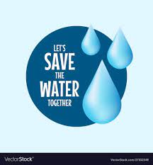
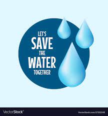

Water conservation is crucial for our planet's well-being, and every drop counts. By adopting simple habits and making conscious choices, we can significantly reduce water waste and ensure a sustainable future for all. Here are some ways to save water Turn off the tap: Avoid leaving the tap running unnecessarily, especially when brushing teeth or shaving. Take shorter showers: Reduce your shower time to conserve water. Fix leaks: Regularly check for leaks in pipes, faucets, and toilets, and repair them promptly. Use water-efficient appliances: Invest in water-efficient washing machines and dishwashers. Water your garden wisely: Water your garden during cooler hours (early morning or evening) to reduce evaporation and use drought-tolerant plants.

To save trees and protect our environment, consider reducing paper consumption, opting for recycled products, planting trees, supporting sustainable practices, and advocating for environmental policies.

Plant native species. Creating planet- and wildlife-friendly environments can start right in your own backyard and in your community. ... Help the zoo or aquarium. ... Make your yard a wildlife haven. ... Avoid harmful chemicals. ...

 
